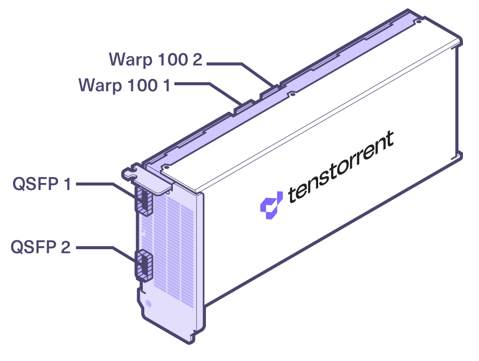
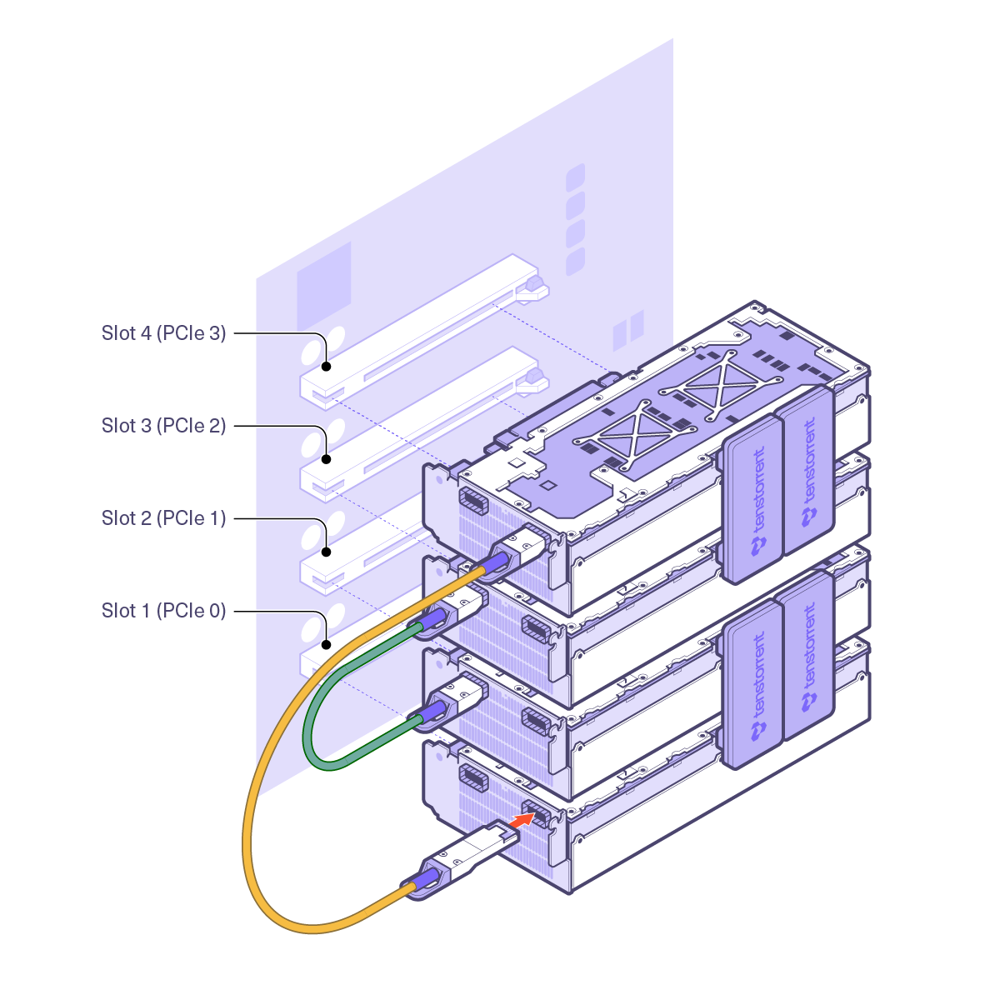

Specifications, Requirements, and Setup
Package Contents
The Tenstorrent TT-QuietBox Liquid-Cooled Desktop Workstation system package includes:
TT-QuietBox Wormhole (TW-04001) |
TT-QuietBox Blackhole (TW-04002) |
|---|---|
Tenstorrent TT-QuietBox Wormhole System |
Tenstorrent TT-QuietBox Blackhole System |
WARNING: TT-QuietBox is shipped in a wooden crate weighing a total of 131 lbs. / 59.4 kg. The system itself weighs 96 lbs. / 43.5 kg. We strongly recommend at least two people for moving and uncrating the system.
If you have any issues with your TT-QuietBox, please visit the TT-QuietBox support page.
System Specifications
Specification |
TT-QuietBox Wormhole (TW-04001) |
TT-QuietBox Blackhole (TW-04002) |
|---|---|---|
CPU |
AMD EPYC™ 8124P |
AMD EPYC™ 8124P |
Motherboard |
ASRock Rack SIENAD8-2L2T* |
ASRock Rack SIENAD8-2L2T* |
Memory |
512 GB (8x64 GB) |
256 GB (8x32 GB) |
Storage |
4 TB NVMe PCIe 4.0 x4 |
4 TB NVMe PCIe 4.0 x4 |
Tensix Processors |
4x Tenstorrent Wormhole™ n300 Tensix Processor |
4x Tenstorrent Blackhole™ p150c Tensix Processor |
Cables |
4x Warp 100 Bridge |
TBD |
Host System |
2x RJ45 10GBase-T via Intel® X710 |
2x RJ45 10GBase-T via Intel® X710 |
Tensix Processor Connectivity |
4x QSFP-DD Active 200G (2 per card) |
16x QSFP-DD Passive 800G (4 per card) |
Power Supply |
1650W 80 PLUS Gold |
TBD |
Operating System |
None |
None |
Dimensions (System) |
10” x 21.5” x 20” (96 lbs.) |
10” x 21.5” x 20” (96 lbs.) |
Dimensions (Shipped) |
18” x 33” x 27” (131 lbs.) |
18” x 33” x 27” (131 lbs.) |
*Early prototypes employed the TYAN Tomcat HX S8040 MB (S8040GM4NE-2T).
Operating System Requirements
The TT-QuietBox system ships without an operating system installed. We recommend installing Ubuntu 22.04 (Jammy Jellyfish) to properly use the Tenstorrent Tensix Processors.
QSFP-DD Connections and System Topology
Blackhole™ p150c Version (TW-04002)
The Tenstorrent TT-QuietBox Blackhole (TW-04002) includes four Blackhole™ p150c Tensix Processors and external QSFP-DD cables that enable the Tensix Processor mesh.
This specification is still being finalized and will be added at a later date.
Wormhole™ n300 Version (TW-04001)
The Tenstorrent TT-QuietBox Wormhole (TW-04001) includes four Wormhole™ n300 Tensix Processors and internal Warp 100 bridges and external QSFP-DD cables that enable the Tensix Processor mesh.

The TT-QuietBox ships with the Warp 100 bridges connected, but the two QSFP-DD cables will need to be connected by the customer. This diagram displays the system topology and how the cards are enumerated, along with where the Warp 100 bridges are connected and where the included QSFP-DD cables need to be connected.

One QSFP-DD cable will need to be connected to Port 1 on the cards in Slots 1 and 4.
One QSFP-DD cable will need to be connected to Port 2 on the cards in Slots 3 and 2.
Environment Specifications
The TT-QuietBox Liquid-Cooled Desktop Workstation is designed to operate at up to 35°C/95°F external ambient temperatures.
Lighting Control
The TT-QuietBox uses a Bitspower RF Remote Controller Hub to control the lighting and the remote is included with the system. For details on how to operate it, please review the Bitspower documentation here.
Software Setup
Instructions on how to set up software on TT-QuietBox are available here.